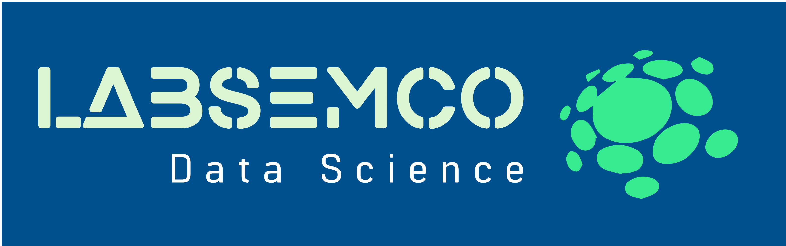

Laboratorio de Semántica Computacional CInC · UAEM
Error 404
Esta página
no está disponible.
La dirección pudo cambiar o el enlace puede estar incompleto.

Laboratorio de Semántica Computacional CInC · UAEM
Error 404
La dirección pudo cambiar o el enlace puede estar incompleto.